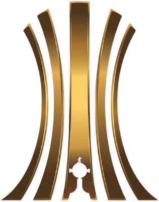
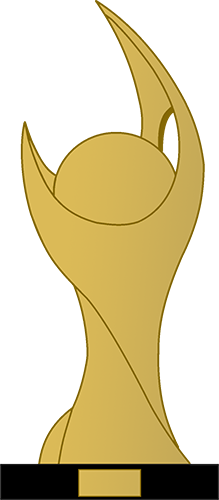
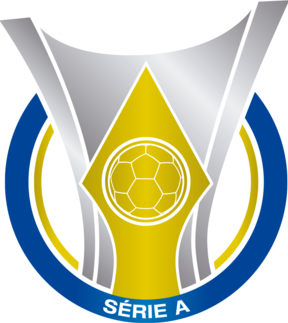
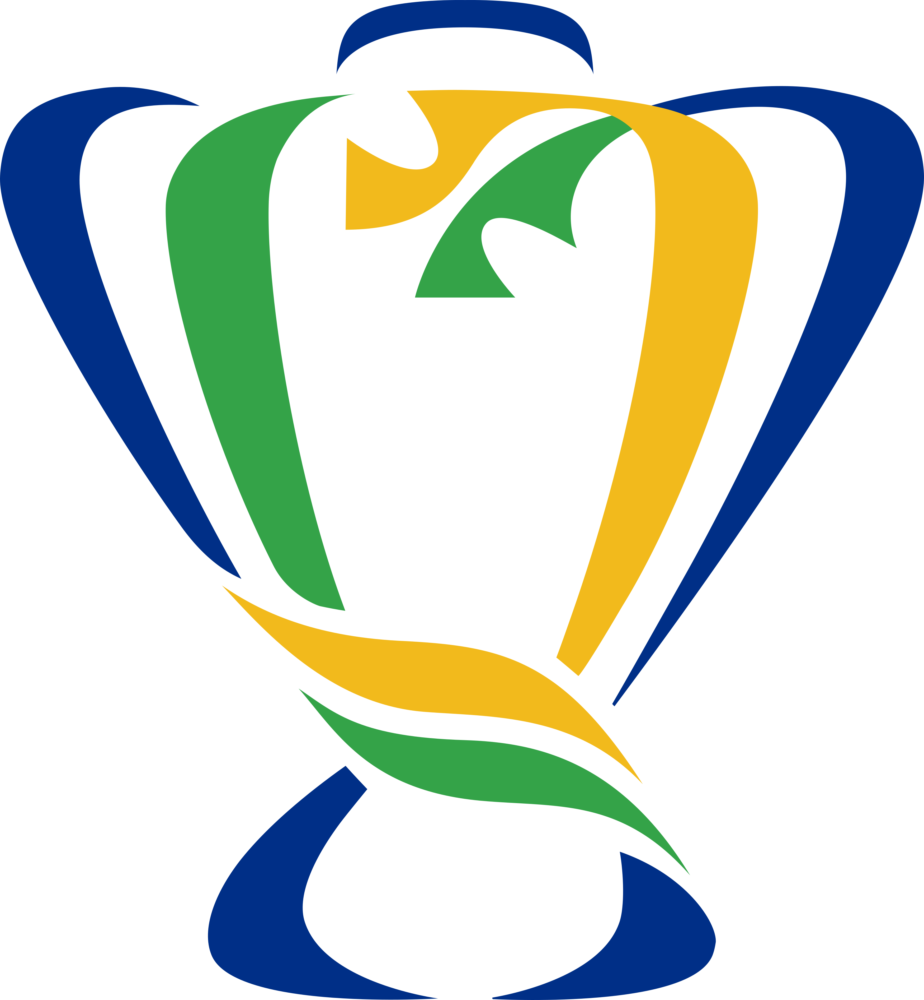
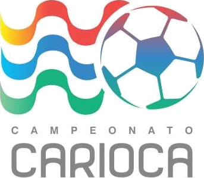

Club de Regatas Vasco da Gama
Club de Regatas Vasco da Gama é uma entidade sócio-poliesportiva brasileira com sede na cidade do Rio de Janeiro, fundada em 21 de agosto de 1898 por um grupo de remadores. Inspirados nas celebrações do quarto centenário da descoberta do caminho marítimo para as Índias, ocorrida em 1498, batizaram a nova agremiação com o nome do navegador português que alcançou tal feito, Vasco da Gama. Apesar de fundado como um clube de regatas, o cruzmaltino abrange diversas modalidades como atletismo, basquete, futebol de areia e futebol americano, tendo como esporte mais tradicional o futebol. É a agremiação brasileira recordista de medalhas em Jogos Olímpicos (40 no total), com 175 atletas convocados, e em Jogos Paralímpicos (34 no total).
O primeiro grande título do Vasco foi o Campeonato Carioca de 1923, conquistado pelo time conhecido como "Camisas Negras", um elenco composto majoritariamente por jogadores sendo negros e de classes operárias. O clube se orgulha de sua luta antirracista, marcada pela Resposta Histórica, carta na qual o cruzmaltino se recusou a dispensar doze de seus atletas negros, contrariando a vontade da AMEA, a liga carioca, que alegava se tratarem de pessoas com "profissão duvidosa". O clube ainda possui, dentre o seu plantel de ídolos, alguns dos maiores artilheiros históricos do Campeonato Brasileiro, tendo como Roberto Dinamite, o maior, com a marca de 190 gols, seguido por Romário e Edmundo, com 154 e 153 gols respectivamente. O primeiro grande ídolo vascaíno foi o atacante Russinho, destaque dos Camisas Negras e eleito o principal jogador do Brasil no período. Em seguida, ascendeu o pernambucano Ademir de Menezes, líder do Expresso da Vitória, que se tornou o maior artilheiro do clube à época, com 301 gols marcados.
História
1898–1915: Fundação
O Vasco foi fundado como um clube de remo em 1898, por um grupo de 63 rapazes, imigrantes portugueses e luso-descendentes, reunidos no bairro da Saúde. O nome escolhido foi Club de Regatas Vasco da Gama, pois naquele ano eram comemorados os 400 anos da viagem do almirante homônimo à Índia. Já filiado à União de Regatas, sua estreia em competições oficiais ocorreu na enseada de Botafogo, a 4 de junho de 1899. Ali, a baleeira "Volúvel", de seis remos, venceu o primeiro páreo na categoria júnior, a primeira vitória do Vasco no remo.
Em novembro de 1915, o Lusitânia Sport Club foi incorporado ao Vasco da Gama, dando origem ao departamento de futebol do clube, apesar da oposição dos remadores vascaínos. O cruzmaltino estreou a 3 de maio de 1916, na terceira divisão da Liga Metropolitana de Sports Athleticos (LMSA), perdendo por 10 a 1 contra o Paladino Foot-Ball Club.
1922–1934: Camisas Negras e a luta contra o racismo
O clube incorporava aos seus quadros atletas de qualquer origem étnica, com a condição que soubessem jogar futebol. Em 1922, conseguiu seu primeiro título na série B estadual, garantindo acesso à Primeira Divisão da Liga Metropolitana de Desportos Terrestres (LMDT). O elenco vascaíno era bastante diverso, com negros, mulatos, portugueses e brancos pobres da classe operária. Apesar de haver outros times com jogadores destas características (por exemplo o Bangu), essa era a primeira vez que as equipes mais elitistas da cidade enfrentavam uma equivalente da periferia.
No dia 12 de agosto de 1923, o Vasco conquistou o campeonato, em seu ano de estreia na primeira divisão. O título foi um marco na história do futebol brasileiro, por ser o primeiro clube campeão com afrodescendentes, pobres e operários. Rui Proença, português Grande Benemérito do clube, identificou o fato como uma verdadeira revolução, enfatizando os preconceitos inicialmente encontrados. O autor conclui que o clube representaria o congraçamento entre negros e portugueses, grupos discriminados que, unidos, fizeram o Vasco. Em 2023, a Câmara dos Deputados aprovou projeto que incluiu os Camisas Negras, nome pelo qual ficou conhecido o elenco desta equipe cruzmaltina, no Livro de Heróis da Pátria.
1942–1954: Expresso da Vitória
Em meados de 1942, veio a formação do elenco conhecido como o Expresso da Vitória, liderado pelo atacante Ademir de Menezes. Já em 1944, venceu o Torneio Relâmpago, superando os outros quatro grandes da época, e aplicando uma goleada de 5 a 2 sobre seu rival Flamengo. Em seguida, conquistou o Torneio Municipal, voltando a vencê-lo nos três anos seguintes, se tornando o único tetracampeão da competição carioca. No período, obteve ainda outros dois títulos cariocas invictos, em 1945 e 1947. Este último rendeu ao clube o convite para disputar o Campeonato Sul-Americano de Campeões, competição precursora da Copa Libertadores da América e reconhecida pela CONMEBOL como de igual valor em 1996/1997 e 2013. Após a conquista continental em Santiago do Chile, no dia 18 de março de 1948, mais de 200 mil pessoas, cerca de 10% da população do Rio de Janeiro à época, tomaram as ruas da cidade para recepcionar entusiasticamente a chegada dos "Campeões dos Campeões do continente".
1955–1969: Domínio mundial
Em 14 de junho de 1957, a equipe de São Januário venceu o Real Madrid de Di Stéfano, Kopa, Paco Gento, por 4 a 3 na final e conquistou a primeira edição do Torneio de Paris, no Parc des Princes, com uma apresentação elogiada pela imprensa europeia. O jornal France Soir chegou a afirmar: "O Real Madrid não é o maior time do mundo. Sobre isso, falem com o Vasco da Gama". Esta edição do torneio é considerada como título mundial extraoficial, por ter sido a primeira competição da história e única pré-1960 a reunir, aos moldes da futura Copa Intercontinental, os campeões continentais da Europa e da América, apontadas como as melhores equipes do mundo à época.
Ainda em 1957, o Vasco da Gama ganharia do Barcelona por 7 a 2, no Les Corts, antiga casa do clube espanhol antes do Camp Nou. Esta é, ainda hoje, a pior derrota internacional sofrida pelos catalães como mandantes em todos os tempos. As vitórias vascaínas sobre os gigantes europeus da época, Real Madrid e Barcelona, fizeram com que a imprensa espanhola questionasse a qualidade do seu próprio futebol. Descrevendo a excursão cruzmaltina pela Europa, o Jornal dos Sports escreveu em manchete: "como um tufão, o Vasco varre o football mundial".
2022–presente
Em 22 de fevereiro de 2022, foi anunciado que a 777 Partners, uma empresa de investimento privado com sede em Miami, comprou uma participação de 70% no controle do futebol do clube, avaliada em aproximadamente US$ 330 milhões. Em 6 de novembro de 2022, o Vasco da Gama selou seu retorno à Série A, após uma ausência de dois anos, ao vencer o Ituano. A temporada de 2023 do clube foi conturbada. A equipe foi eliminada precocemente pelo ABC na Copa do Brasil e permaneceu na zona de rebaixamento do Campeonato Brasileiro por 24 das 38 rodadas. Contudo, com a chegada do técnico Ramón Díaz e as contratações de Gary Medel, Maicon, Paulinho Paula, Pablo Vegetti e Dimitri Payet, o cruzmaltino conseguiu assegurar a permanência na Série A, após vencer o Red Bull Bragantino por 2 a 1 em São Januário.
O ano de 2024 da equipe foi marcado pelo afastamento da 777 Partners da Sociedade Anônima do Futebol. Nas competições, o clube chegou, depois de 13 anos, às semifinais da Copa do Brasil, além de conseguir alcançar a classificação para a Copa Sul-Americana de 2025. Também foi o ano em que ocorreu a maior goleada aplicada pelo Flamengo na história do Clássico dos Milhões, além do retorno de Philippe Coutinho para a equipe.
Símbolos
Escudo
O escudo de fundação do Vasco, utilizado desde 1899, consiste de uma caravela em um brasão redondo. Logo em 1903, ocorreu a primeira modificação, quando na administração do presidente Alberto Carvalho foi adicionado um fundo negro e as iniciais do clube, separados por seis cruzes de Cristo, circundando o escudo. Apenas na década de 1920 foi adotado o escudo no formato atual, que recebeu suaves modificações ao longo do tempo. Nele se encontram cravadas as iniciais, formando o acrônimo CRVG, e está representada a caravela, expressão das navegações portuguesas. Nas velas da embarcação está estampada a cruz, símbolo máximo do clube e que possui forte aspecto religioso, já que a Ordem Militar de Cristo era ao mesmo tempo religiosa e guerreira. Os componentes estão mergulhados em um fundo negro, cortado pela faixa diagonal branca.
Uniformes
Os equipamentos do Vasco da Gama são frequentemente incluídos entre os mais bonitos do mundo. O primeiro uniforme vascaíno era composto por uma camisa preta, com faixa horizontal branca e a Cruz de Cristo em vermelho ao centro. Logo em 1899, em decorrência da Cisão Social no clube, a faixa se tornaria transversal, partindo do ombro direito – em sentido inverso ao atual. Ela simboliza o caminho das caravelas à Índia; e o fundo negro, os mares "nunca dantes navegados", as tormentas e o abismo. Já a cruz, por sua vez, representa o povo português e sua fé.
Mascote
O primeiro mascote do Vasco foi o Almirante, criado pelo argentino Lorenzo Molas em homenagem ao navegador português Vasco da Gama. As primeiras charges apresentavam o personagem como um português gordo, careca e de longos bigodes. Em 30 de junho de 1944, o Jornal dos Sports publicou a primeira charge contendo a figura do Almirante representado por um almirante português, na proa de uma caravela com a cruz de Cristo.
Outro mascote popular foi o Corvo, idealizado por Otelo Caçador. O primeiro cartum de Otelo trazia uma caravela, na qual o Almirante batalhava contra os demais mascotes cariocas. No alto do mastro, ele desenhou um corvo; indagado sobre o animal, afirmou que era de bom agouro. Como a ave é em geral associada ao azar, especula-se que tenha sido uma piada, já que o cartunista era rubro-negro e costuma provocar os rivais em seus desenhos. Piada ou não, o Vasco se sagrou campeão invicto naquele ano, o mascote se popularizou e passou a ser chamado "Dom Corvo", em alusão ao título de nobreza comum em Portugal. Com o sucesso, a diretoria vascaína decidiu adquirir um corvo; contudo, ele não existe no Brasil, e precisou ser importado; sua vinda necessitou autorização do país português, que na época proibia a saída da ave. A chegada do animal foi amplamente coberta pela mídia à época: o Rádio Clube Brasil realizou programas em homenagem ao corvo, e o Jornal dos Sports uma festa em sua recepção.
Títulos
| Ícone | Competição | Títulos | Temporadas |
|---|---|---|---|
| Continentais | |||
|  | Copa Libertadores da América | 1 | 1998 |
|  | Copa Mercosul | 1 | 2000 |
| Nacionais | |||
|  | Campeonato Brasileiro | 4 | 1974, 1989, 1997 e 2000 |
|  | Copa do Brasil | 1 | 2011 |
| Estaduais | |||
|  | Campeonato Carioca | 24 | 1923, 1924, 1929, 1934, 1936, 1945, 1947, 1949, 1950, 1952, 1956, 1958, 1970, 1977, 1982, 1987, 1988, 1992, 1993, 1994, 1998, 2003, 2015 e 2016 |